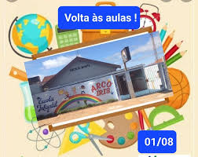

Escola Arco-íris
Foi a minha primeira escola onde aprendi a ler e escrever.
O início da minha jornada.

Colégio São Lucas :

Onde comecei o ensino fundamental.
Conhecendo meus aamigos.
Descobrindo do que gosto e do que não gosto.
Estudei lá até o primeiro ano do enseino médio.
Escola Ana Franco:

Onde fiz novas amizades.
Onde descobri mais sobre a minha vocação.
Onde terminei o ensino médio.
Um lugar onde vou sentir muita saudades.
Curso Cebrac:

Tive o primeiro contato com a computação.
Participei de um curso de rotina administrariva.
Fuculdade Fatec:

Onde estou tendo uma experiência desafiadora.
Prestando o curso de GTI.
Tendo mais experiência com a computação e uma noção financeira com a matemática.
Onde pretendo me formar.